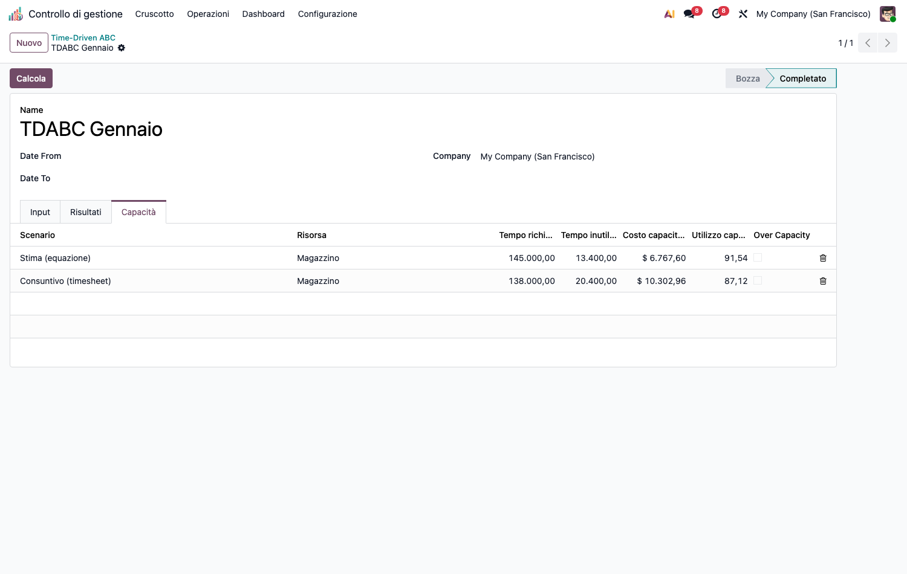
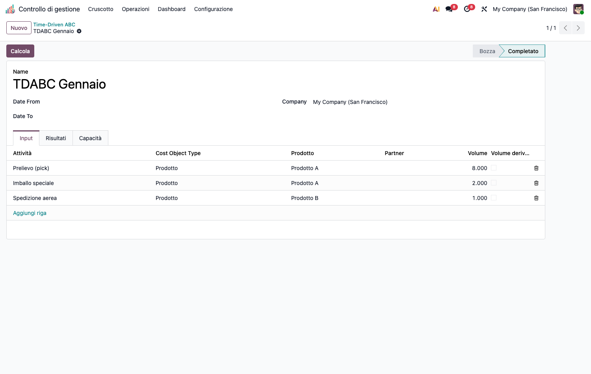
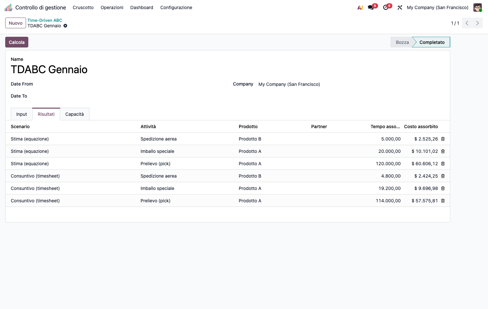

<section class="oe_container">
<div class="oe_row oe_spaced">
<div class="oe_span12">
<h1>CMC – Time-Driven ABC (cmc_tdabc)</h1>
<p>Modulo capillare della suite CMC. Dipende da <code>cmc_base</code> e <code>product</code>.</p>
<h2>Obiettivo</h2>
<p>Costeggiare prodotti <strong>e clienti</strong> con il TDABC, basato su <strong>due parametri</strong>:</p>
<ol><li><strong>Capacity cost rate</strong> (€/min) = costo della risorsa / <strong>capacità pratica</strong>.</li><li><strong>Tempo unitario</strong> per transazione, via <strong>time equation strutturata</strong> (<code>base_time</code> + Σ coefficiente × caratteristica) — nessuna formula testuale, tutto parametrico.</li></ol>
<p>Caratteristiche distintive:</p>
<ul><li><strong>Costo della capacità inutilizzata</strong> calcolato ed <strong>isolato</strong> (non caricato agli oggetti di costo) → niente <em>death spiral</em>.</li><li><strong>Doppio scenario confrontabile</strong> in un unico calcolo: <strong>Stima (equazione)</strong> vs</li></ul>
<p><strong>Consuntivo (timesheet)</strong> (tempo medio empirico da ore reali).</p>
<ul><li>Oggetto di costo = <strong>prodotto</strong> o <strong>cliente</strong>.</li></ul>
<p></p>
<h2>Configurazione (step-by-step)</h2>
<ol><li>Installa <code>cmc_tdabc</code> (richiede <code>cmc_base</code>).</li><li><strong>Configurazione › Time-Driven ABC › Risorse TDABC</strong>: crea le <strong>risorse</strong> con costo di periodo, tempo teorico (min) e <strong>% di utilizzo</strong> → il sistema calcola capacità pratica e <strong>tariffa €/min</strong>.</li></ol>
<p></p>
<ol><li><strong>Configurazione › Time-Driven ABC › Caratteristiche</strong>: crea le <strong>caratteristiche</strong> riusabili (bool o numeriche, es. <em>Fuori misura</em>, <em>VIP</em>) che alimentano le equazioni.</li><li>Assegna i valori delle caratteristiche ai prodotti/clienti (tab <em>TDABC Characteristics</em> sulla scheda prodotto o cliente).</li><li><strong>Configurazione › Time-Driven ABC › Attività TDABC</strong>: crea le <strong>attività</strong>, collega la risorsa, imposta il <strong>tempo base</strong> e aggiungi i <strong>termini</strong> dell&#x27;equazione (caratteristica × coefficiente).</li><li>(Solo scenario timesheet) tagga le righe analitiche di ore reali con il campo</li></ol>
<p><strong>Attività TDABC</strong> per abilitare il confronto consuntivo.</p>
<h2>Utilizzo (step-by-step)</h2>
<ol><li><strong>Calcolo costi › Time-Driven ABC › Calcolo TDABC</strong> → <strong>Nuovo</strong>.</li></ol>
<p></p>
<ol><li>Nel tab <strong>Input</strong> aggiungi le righe <em>attività × oggetto di costo (prodotto/cliente) × volume</em>. Il <strong>volume</strong> è manuale oppure <strong>derivato</strong> (conteggio automatico dalle righe analitiche taggate, se attivi <em>Volume derivato</em>).</li><li>Premi <strong>Calcola</strong>. Il tab <strong>Risultati</strong> mostra, per <strong>scenario</strong>, il tempo assorbito e il costo assorbito per oggetto di costo.</li></ol>
<p></p>
<ol><li>Il tab <strong>Capacità</strong> riporta, per risorsa e scenario: tempo richiesto, tempo/costo</li></ol>
<p><strong>inutilizzato</strong>, % di utilizzo e flag <strong>over capacity</strong> (richiesta &gt; capacità pratica).</p>
<h2>Note</h2>
<ul><li><strong>Conservazione esatta</strong>: Σ costo assorbito + costo inutilizzato = costo della risorsa (la capacità inutilizzata è il residuo esatto, nessun drift di arrotondamento).</li><li><strong>Standalone</strong>: nessuna dipendenza hard da <code>hr_timesheet</code>/<code>account</code>; lo scenario timesheet e il volume derivato usano <em>runtime detection</em> sulle righe analitiche.</li><li><strong>Guardie fail-loud</strong>: capacità pratica ≤ 0 → errore; tempo unitario negativo → errore (manuale e timesheet); over capacity → segnalato (non bloccante).</li></ul>
</div>
</div>
</section>
